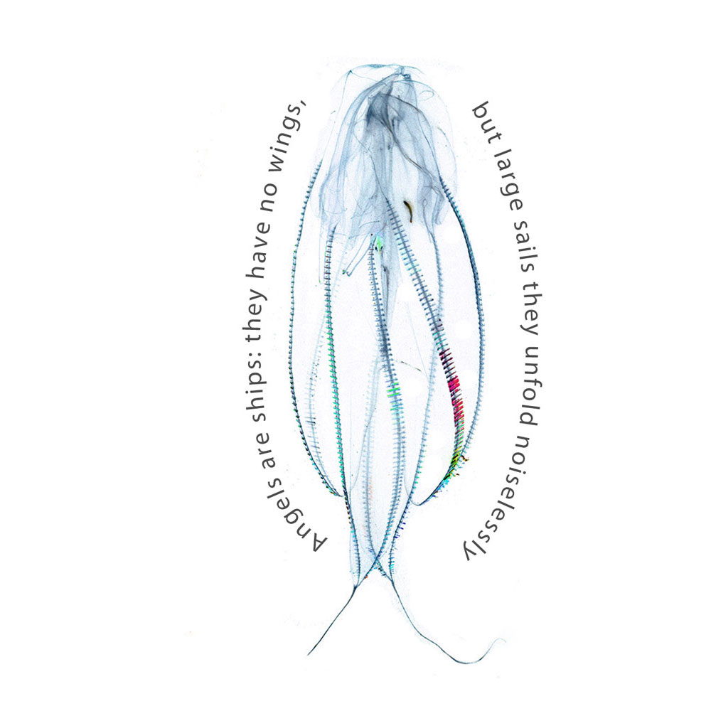
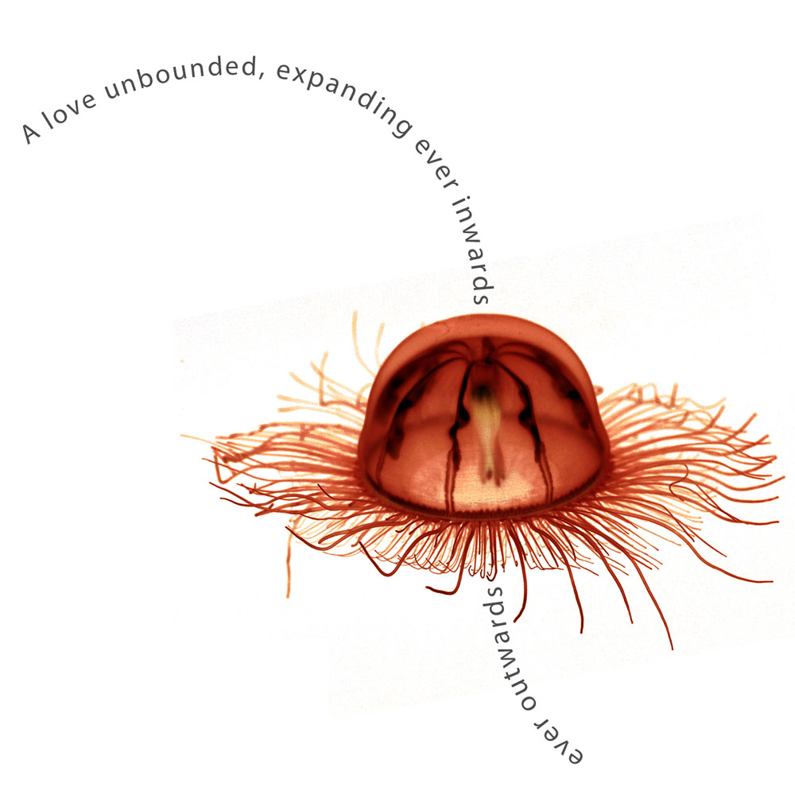
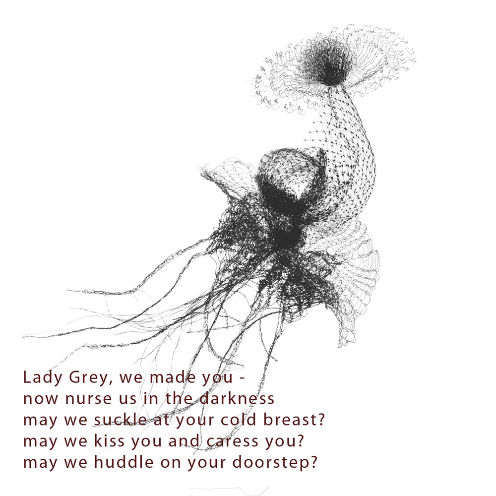
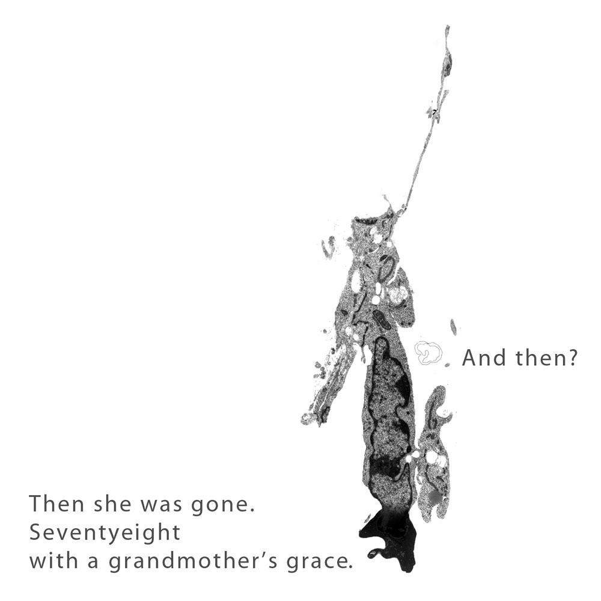
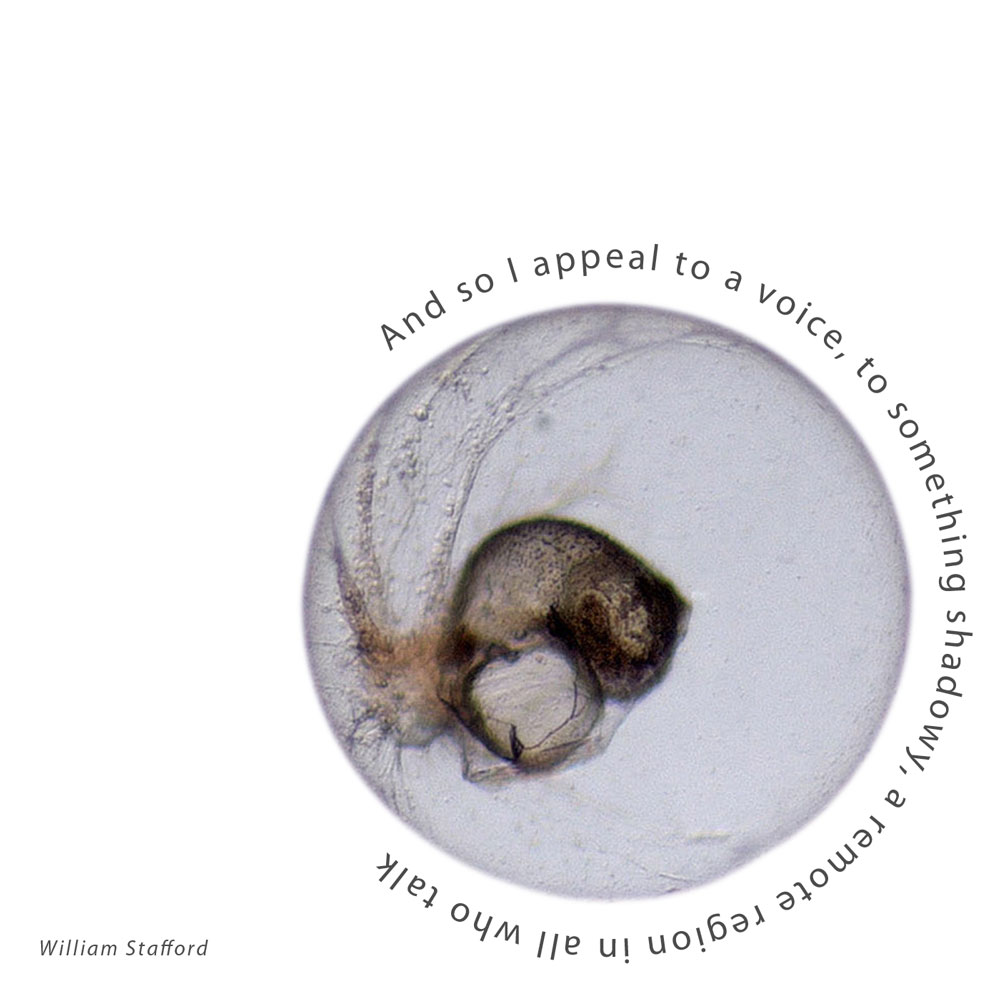
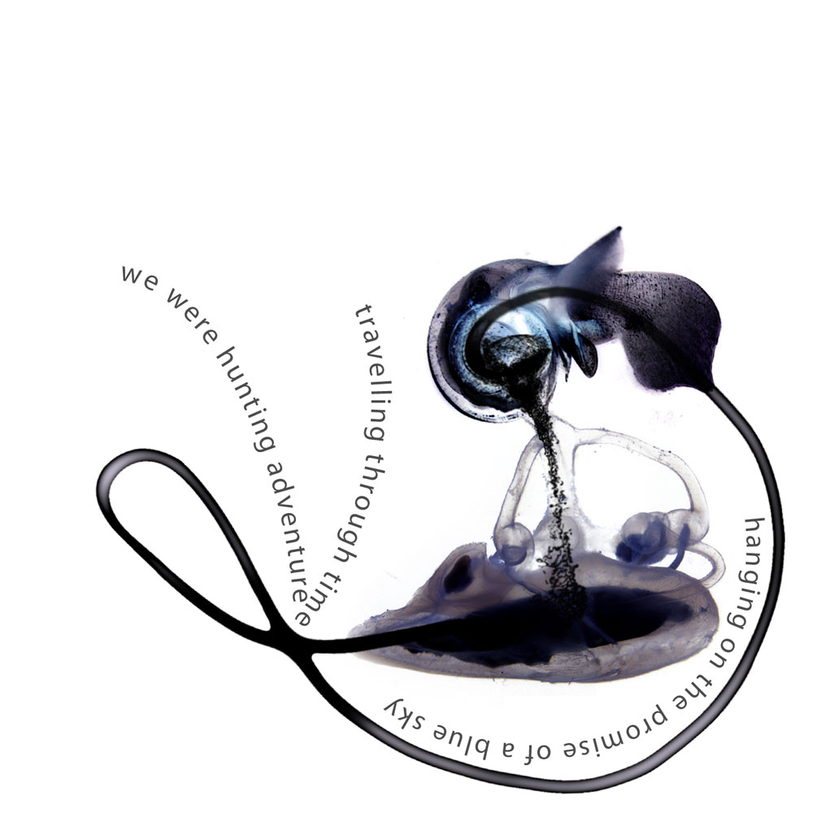
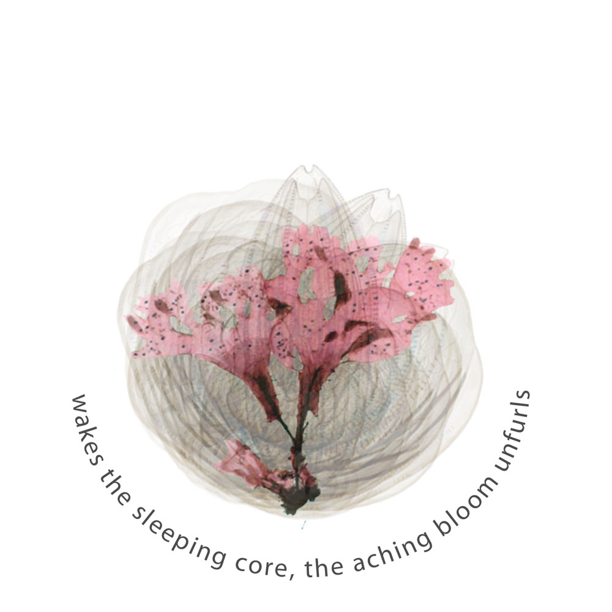
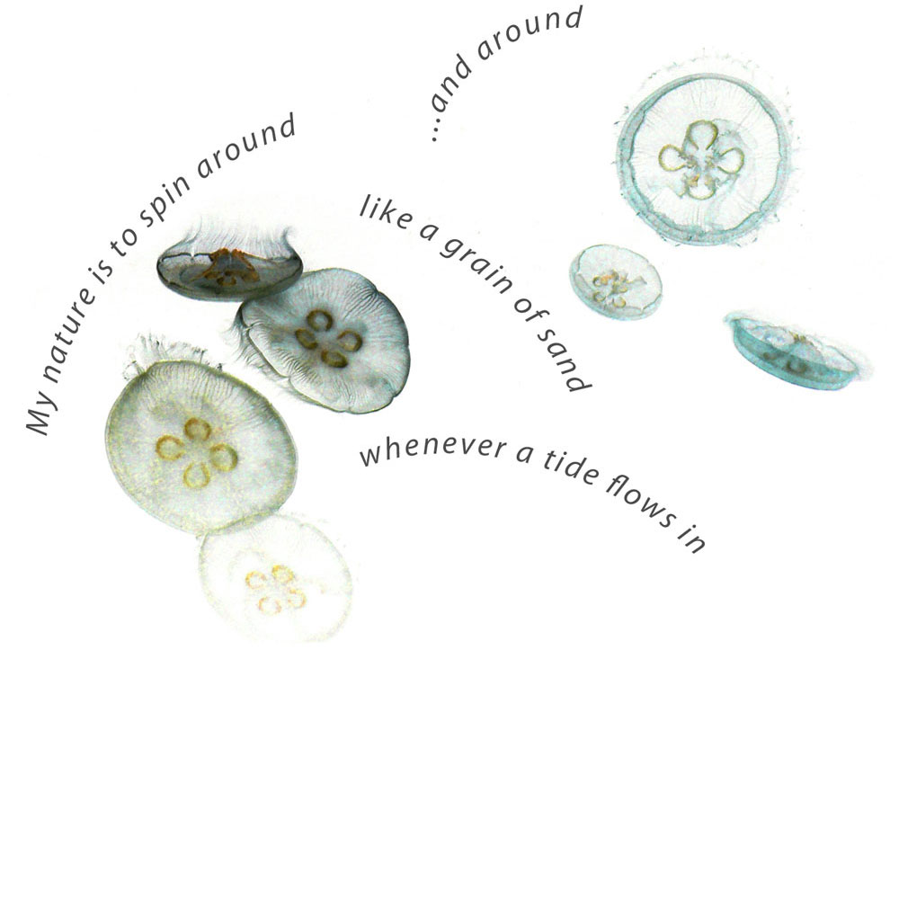
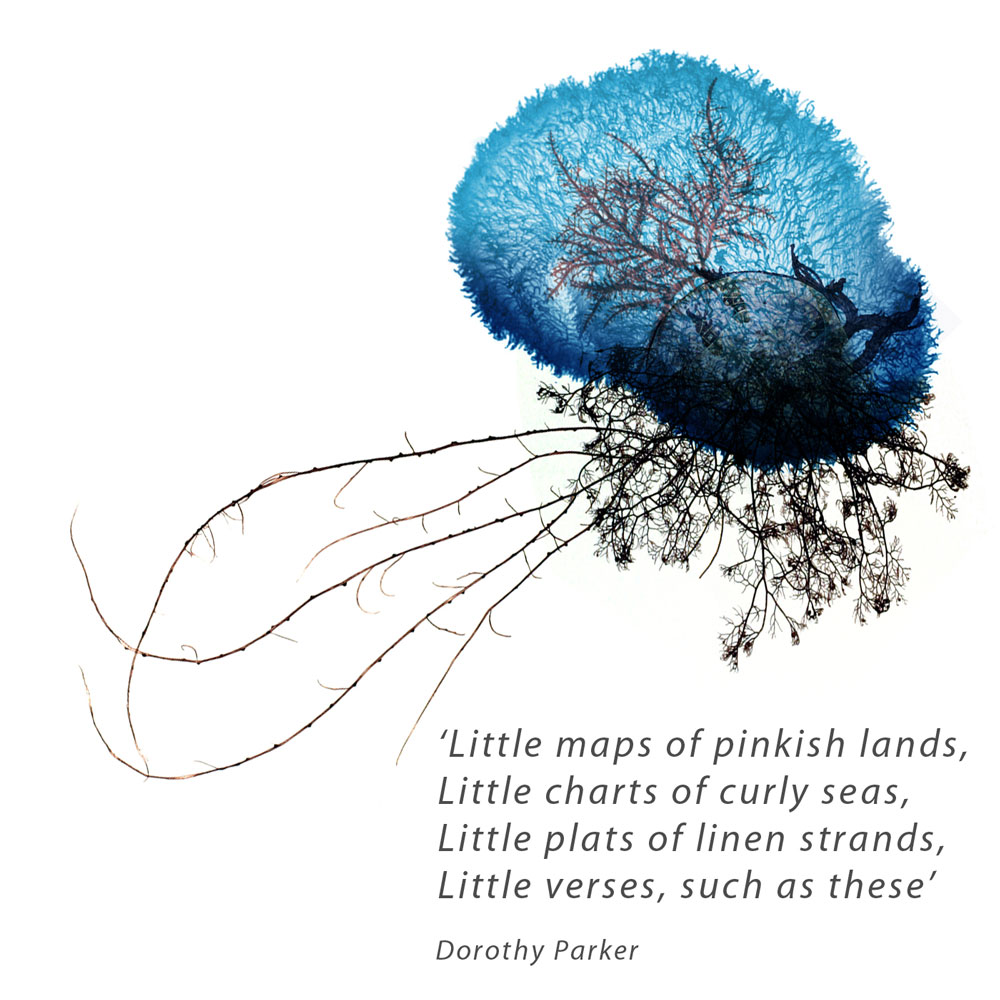
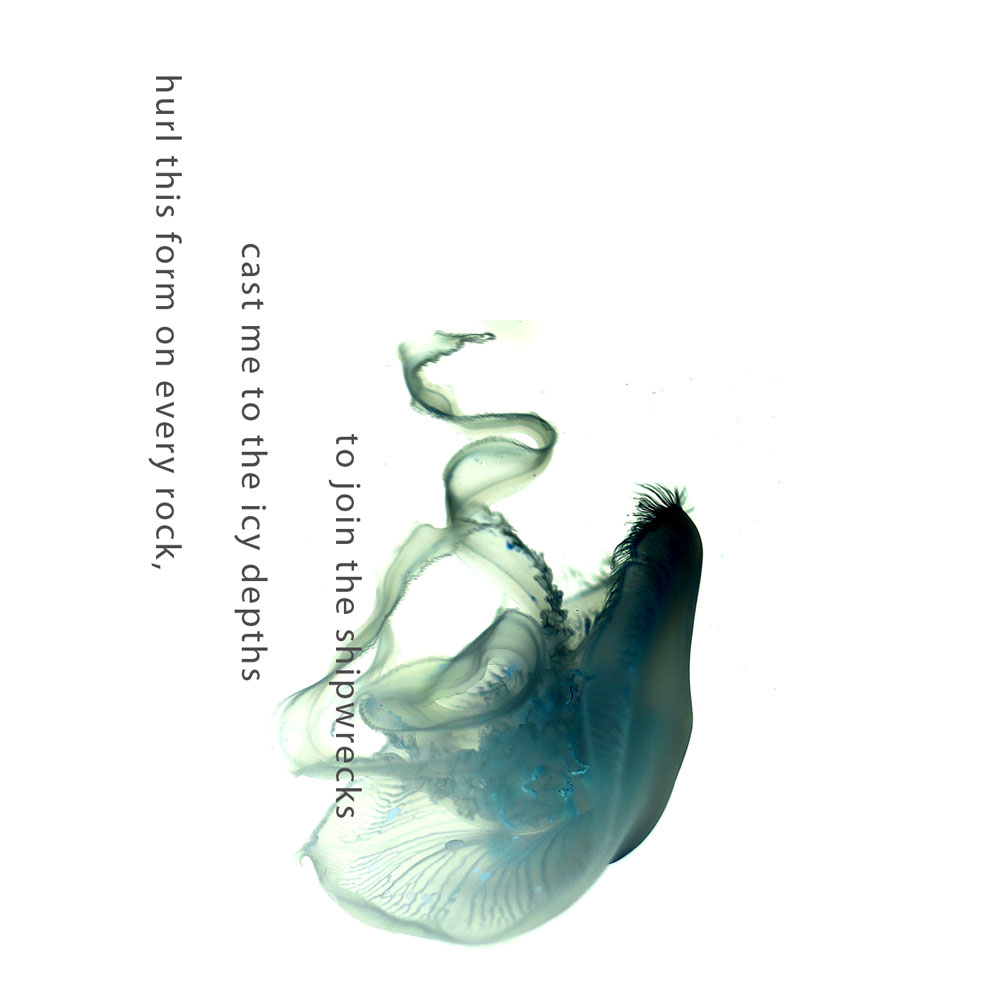

Winterlands

Brigantine
Opening lines adapted from 'The Journals Of Anais Nin Voume 4'
"This I will say though you mustn't repeat
to ears unripe to receive
Paradise is under the sea
Angels are ships, they have no wings
but large sails they unfold noiselessly
Every night they cross eternity"
Angels call on night
Angels hoist their sails
Angels call on wind to stir up sand
and make great waves
Oh, the ocean won't hide
nor will it be silenced by deaf ear, nor by blind eye
you hid your pearls in an oyster shell
well be warned
angels won't guard them for long
Angels will steal them all
Angels call on night
Angels hoist their sails
Angels call on wind to stir up sand
and make great waves

Gemstone
Laura Hyland 2005 Written for the wedding of Mark O Brien and Ida O Keefe
Hear this -
The humble heart will bear a noble gift
a love unbounded
expanding ever inwards
ever outwards
establishing a sacred trust
How vulnerable
how strong
the eyes that are wide open
that invite another
to look inward and explore
What greater honour than to hold
another's hand with conviction
and yet cherishing a separateness
through which each bestows upon the other
a gemstone

Lady Grey's Allotment
Laura Hyland 2007
Mother, mother, mother,
you are past it and this
dirty whore, your daughter
flings your mantle to the floor
and dances wilder than a harlot
Lady Grey, we made you,
oh now nurse us in the darkness,
may we suckle at your cold breast,
may we kiss you and caress you,
may we huddle on your doorstep
Movers and shakers, on-the-makers,
wheeler-dealers, rock n' rollers
reeling to the rumble
of a hundred hollow pipers.
Snipers, sate our appetites
with pixel or with pencil,
tricksters, troubadours and thinkers,
mystify me with your musings
Lady, look upon your many minions
pin their high hopes to a pittance
Oh now none dare to admit it
but the asking price is precious
Lady labyrinthine and lithe,
lead us to the pyre,
lay us down supine
Every ugly alley offers up another lover,
every trussed up trend inspires
and then withers like a flower.
All our hours linger listless and protracted,
ripe and bloated with distractions,
fat and full with contradictions
Slipping softly, softly
slipping through our fingers
Tick tock tick tock tick tock
goes the clock. Quick, quick, quack,
quack, Oh how those gods
they mock us with this weather,
weilding sun and surly tempest.
All and sundry run for cover
in the bunkers and the bedsits
Lady won't you save us
from an unsavoury ending
but the Lady wouldn't listen
so we feigned to fight against her
with our foul and filthy lucre
and the puca in our pockets
and the banshee at the bedstead
and a demon in the closet
and we're calling 'Mother,
may we please appease our concience
with these lovely Autumn apples;
we have grown them in the good earth
of our Lady Grey's allotment.'

A Death And A Vision
Laura Hyland 2007
"Nora
I'm on the way out"
She said, over the phone
from the bay window
overlooking the graveyard
And then?
well then she was gone
seventy eight
with a grandmother's grace
at eight in the morning
And in the soapy softness
of her aged and ancient hands
I felt a warmth
unmistakably hers
and in it every mother's kiss
every soft caress
Sitting by the cistern
smoking cigarettes

A Ritual To Read To Each Other
William Stafford
From 'West Of Your City', Talisman Press, Harper & Row 1960
Reprinted by permission of the Estate Of William Stafford
If you don't know the kind of person I am
And I dont know the kind of person you are
A pattern may prevail in the world
And following the wrong god home we may miss our star
For there is many a small betrayal in the mind
A shrug that lets the fragile sequence break
sending with shouts the horrible errors of childhood
storming out to play trhough the broken dike
And as elephants parage holding each elephants' tail
But if one wanders the circus won't find the park
I call it cruel and maybe the root of all cruelty
To know what occurs but not recognise the fact
And so, I appeal to a voice, to something shadowy,
– a remote, important region in all who talk.
Though we could fool each other we should consider.
Lest the parade of our mutual life gets lost in the dark
For it is important that awake people be awake
Or a breaking line may discourage them back to sleep
The signals we give – yes, no or maybe – should be clear;
the darkness around us is deep

On The Promise of A Blue Sky
Laura Hyland 1998
I may have been sleeping
I dreamt that I was dreaming
I don't know which way the wind was blowing;
My mind was drifting in and out of time.
Maybe I'm home again,
here again there again
and we're back again where we belong
back to where it all began
Meanwhile you' re gone in search of sunshine,
magic and starlight and the full moon!
And I'm chasing a daydream,
stalking inspiration on
forgotten pavement benches
where the old folk meet
and the tomcats screech.
In the shadow of street lamps
this world is throwing shapes around us;
I'm hanging on the promise of a blue sky
We'll be home soon
We were under the ocean
hand in hand
dancing in silken sea
We were hunting adventure,
travelling through time,
hanging on the promise of a blue sky

The Hushed Bud
Laura Hyland 2002,
Inspired by the poem 'Risk' by Anais Nin
And the day came when the risk to remain tight in a bud was more painful than the risk it took to blossom.
The day has come
And all remains
'tight in the bud'
waiting for rain
waiting for sun
waiting to blossom...
Gorgeously concealed
wrapped in finest red
delicately curved
pursed and poised within
the safest of cradles
the warmest of wombs
the shyest of passions
is coming undone
But all the Earth insists -
drives an ancient, urgent kiss
from the pit of the root
to the quivering tip -
wakes the sleeping core -
the aching bloom unfurls

Grain Of Sand
Anonymous 8th Century Japan
No,
I will not die for love
I lack the dicipline
To face the waves and
drown in them
My nature is to spin
Around and around
like a grain of sand
whenever a tide flows in

Bric-a-Brac
Dorothy Parker
from 'Sunset Gun' 1928, NY Boni & Liveright.
Reproduced by permission of Pollinger Limited and The National Association for the Advancement of Colored People.
Little things that no one needs
Little things to joke about
Little landscapes, done in beads
Little morals, woven out
Little wreaths of gilded grass
Little brigs of whittled oak
Bottled painfully in glass
These are made by lonely folk
Lonely folk have lines of days
Long and faltering and thin
Therefore little wax bouquets
Prayers cut upon a pin
Little maps of pinkish lands
Little charts of curly seas
Little plats of linen strands
Little verses, such as these

Shipwrecks
Laura Hyland copyright 2005
Oh to feel
the freezing Sea
All around me
Send me your greatest wave
May she flood the whole wide world in her mouth
Drag me down
in briney foam
I am done with dry land
I would gladly give
up these lungs for gills to stay with you
Oh that this raging Sea
this slathering beast
would ravage me
Hurl this form on every rock
cast me to the icy depths to join the shipwrecks